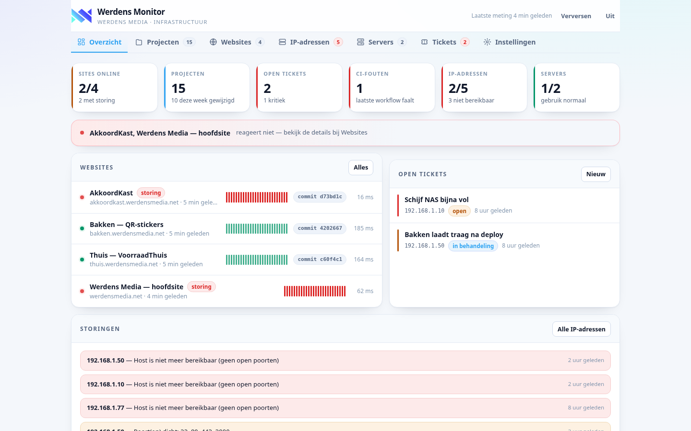
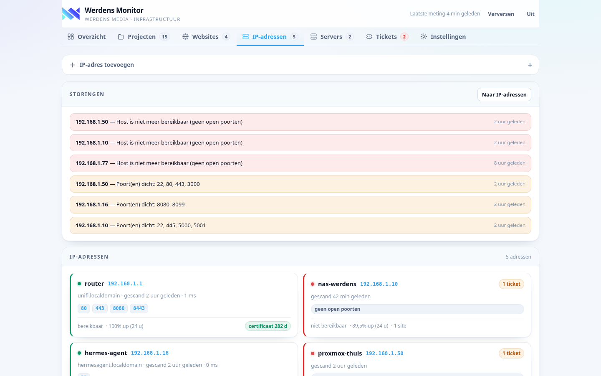
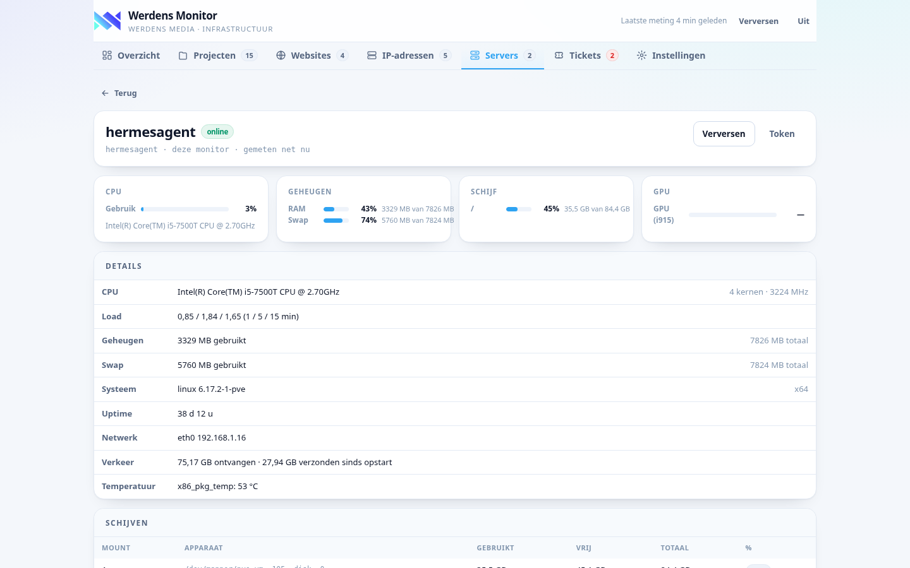

Werdens MonitorWERDENS MEDIA · INFRASTRUCTUUR
Al je sites, repo's en IP-adressen
in één dashboard.
Eigen stack naar het voorbeeld van Checkmk. Zonder npm, zonder Docker — één Node-proces met SQLite, Nederlandse interface en PWA.
GitHub-projecten met versie en CI
Websites met TLS en stats
IP-hosts met poortscan
CPU, GPU en schijven per server
Tickets voor je ICT-agent
Meldingen naar Slack
Installeren met één regel
curl -fsSL …/installeer.sh | bashwerdens-monitor · overzicht

IP-adressen
hosts

Servers
hardware
